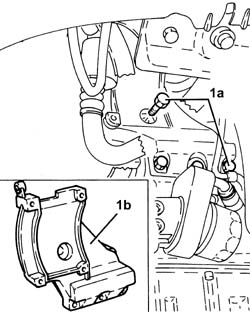
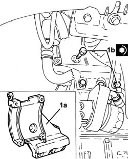

5040A26 COMPRESSOR MOUNT - R R
- Path
- Procedures > 50 AUXILIARY UNITS > 5040 AIR CONDITIONING CASING AND COMPONENTS > 5040A CHECKING OPERATION OF AIR CONDITIONER (TEMPERATURE) > 5040A26 COMPRESSOR MOUNT - R R
- Kind
- repair procedure (removal / refitting; the operation number is the code)
- Applies to
- engines: 2.0 JTS; all production periods
- Interactive page
- https://sloeber94.github.io/elrnDB-aGt/en/#/125001523
Applies to: engines: 2.0 JTS; all production periods
 Removing
Removing
 Refitting
RefittingPosition the vehicle on the ramp
Ensure that the ignition key is in OFF position, then disconnect the battery negative terminal (-).
Name | Connector | |
|---|---|---|
- | Battery | See A1B BATTERY ( BATTERY NEGATIVE ) |
Drain the air conditioner coolant circuit
Op. 0010T84 COOLANT FOR AIR CONDITIONING SYSTEM DEHYDRATE AND RECHARGE.
Proceed with removal
Op. 4450B04 RIGHT FRONT WHEEL R R
Proceed with removal
Proceed with removal
Op. 7055B66 ENGINE COMPARTMENT DUST SHIELD PROTECTION IN RIGHT FRONT WHEEL ARCH - R.R.
Proceed with removal
1. Undo the bolts (1a) and remove the air conditioning compressor support (1b).
Op. 7055B54 UNDER-ENGINE GUARD - R R
Op. 5040A20 AIR CONDITIONER COMPRESSOR - R+R - INCLUDES FLUID LEVEL CHECK AND TOP UP IF NECESSARY

Applies to: engines: 2.0 JTS; all production periods
Refitting
Removing1. Place the air conditioning compressor mounting (1a) back in its housing and fix it tightening the bolts (1b) to the recommended torque.
 | Fastening | Component | Ø | Value (daNm) |
|---|---|---|---|---|
1b | Bolt | COMPRESSOR MOUNT (AC) | M10 | (Crankcase side) 4.5 ÷ 5.5 |

Applies to: engines: 2.0 JTS; all production periods
Proceed with refitting
Op. 5040A20 AIR CONDITIONER COMPRESSOR - R+R - INCLUDES FLUID LEVEL CHECK AND TOP UP IF NECESSARY.
Proceed with refitting
Op. 7055B54 UNDER-ENGINE GUARD - R R.
Proceed with refitting
Op. 7055B66 ENGINE COMPARTMENT DUST SHIELD PROTECTION IN RIGHT FRONT WHEEL ARCH - R.R..
Proceed with refitting
Op. 4450B04 RIGHT FRONT WHEEL R R.
Fill the air conditioner coolant circuit
Op. 0010T84 COOLANT FOR AIR CONDITIONING SYSTEM DEHYDRATE AND RECHARGE.
Connect the negative (-) battery terminal
Remove the car from the ramps.
Topics linked from this page (5)
- 0010T84 COOLANT FOR AIR CONDITIONING SYSTEM DEHYDRATE AND RECHARGE
- 4450B04 RIGHT FRONT WHEEL R R
- 5040A20 AIR CONDITIONER COMPRESSOR - R+R - INCLUDES FLUID LEVEL CHECK AND TOP UP IF NECESSARY
- 7055B54 UNDER-ENGINE GUARD - R R
- 7055B66 ENGINE COMPARTMENT DUST SHIELD PROTECTION IN RIGHT FRONT WHEEL ARCH - R.R.
Topics that link to this page (23)
- 1008A44 REAR RIGID MOUNT - R R
- 1020A20 CRANK CASE OIL SUMP - R + R CLEAN SEALS FOR SEALANT APPLICATION
- 1020D10 FRONT CRANK SHAFT OIL SEAL COVER - R + R AND REPLACE SEALS WITH TIMING BELT REMOVED
- 1020D15 FRONT CRANKSHAFT OIL SEAL COVER-R+R AND REPLACE SEALS FOR ENGINES WITH OIL PUMP ON CRANKSHAFT AND HEAT EXCHANGER
- 1020D36 FLYWHEEL END OIL SEAL - REPLACE FOR MANUAL GEARBOX WITH HYDRAULIC SELECTION VERSIONS
- 1020D38 FLYWHEEL SIDE OIL SEAL - REPLACE
- 1024B10 ENGINE FLYWHEEL - R + R FOR VERSIONS WITH MANUAL GEARBOX
- 1024B11 ENGINE FLYWHEEL - R R FOR MANUAL GEARBOX WITH HYDRAULIC SELECTION VERSIONS
- 1028H10 PISTON WITH CONNECTING ROD - R R
- 1076B10 EXHAUST PIPE ASSEMBLY - R + R
- 1076B34 FRONT CATALYTIC CONVERTER ATTACHMENT SEAL - REPLACE
- 1080B62 CATALYTIC CONVERTER - R + R
- 1084B26 EMGINE OIL INTAKE DUCT - R R
- 1088D24 RIGID PIPE FOR COOLANT INLET TO WATER PUMP - R + R
- 1810A20 CLUTCH - R + R
- 1810A28 CLUTCH - R R FOR MANUAL GEARBOX WITH HYDRAULIC SELECTION VERSIONS
- 1820A24 THRUST BEARING LINKAGE - R + R
- 2110A10 MANUAL GEARBOX AND DIFFERENTIAL - R + R
- 2110A11 MANUAL GEARBOX WITH DIFFERENTIAL - R R FOR VERSIONS WITH HYDRAULIC SELECTION
- 2110C24 SEALS FOR GEARBOX INPUT SHAFT - R R FOR MANUAL GEARBOX WITH HYDRAULIC SELECTION VERSIONS
- 4130B40 OUTLET PIPE FROM PUMP TO POWER STEERING CASE R R
- 4410D13 FRONT SUSPENSION BEAM - R R
- 4410D15 FRONT SUSPENSION BEAM COMPLETE WITH WISHBONES AND STABILISER BAR R R